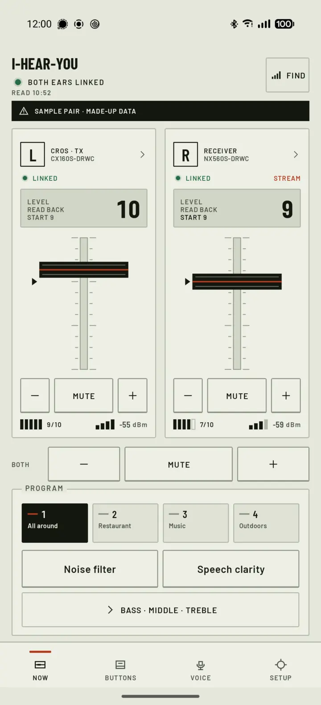

Un mando para tus audífonos que funciona sin conexión.
I Hear You es un mando independiente, interoperable y de código abierto para Android para audífonos GN, probado con ReSound Nexia y CROS. Muestra la batería, el programa y el volumen, deja que una pulsación en el audífono ejecute una acción en el teléfono y usa los micrófonos de los audífonos para notas de voz.

Sin relación con GN Hearing. I Hear You es un proyecto independiente, no oficial y de código abierto. ReSound, Nexia, Beltone y otros nombres son marcas de sus propietarios.
Control diario, sin conexión
Cubre el control diario de sus audífonos sin cuenta y sin conexión a la nube, y añade algunas cosas propias.
Ver y ajustar cada audífono
Batería, señal, estado de la transmisión, programa y volumen del audífono izquierdo y del derecho, con tecla de silencio y tira de programas. Cada cambio se muestra primero como enviado y luego como leído de vuelta del audífono.
Que el botón del audífono haga más
Una pulsación corta, larga o doble en cada audífono puede tener su propia acción en el teléfono.
Hablar con el teléfono a través de los audífonos
Las notas de voz se graban con los micrófonos de los propios audífonos y se transcriben en el teléfono.
Sin cuenta, sin nube
La app habla con los audífonos por Bluetooth LE. No tiene cuenta ni analítica. La red solo la usan los destinos de notas de voz que usted configure.
Con qué audífonos funciona
I Hear You se comunica con los audífonos GN por Bluetooth LE. Se ha probado con los audífonos ReSound Nexia NX560S (Nexia 5) y NX460S y con el transmisor Nexia CROS CX160S.
ReSound Nexia con Nexia CROS
NX560S (Nexia 5), NX460S y el CROS CX160S. Todo lo que describe esta página se comprobó con ellos.
Otros audífonos GN recientes
La app es compatible con varias generaciones de audífonos GN y reconoce audífonos de las marcas de GN ReSound, Beltone, Jabra Enhance, Danalogic e Interton. Ninguno de esos otros audífonos se ha probado todavía. Si tiene uno, cuéntenos qué funciona y qué no.
Otros fabricantes, audífonos con código
Phonak, Oticon, Signia, Widex, Starkey y otras marcas ajenas a GN usan otros protocolos. Tampoco son compatibles los audífonos GN que piden un código para emparejarse.
Si la app encuentra una generación de audífono que no conoce, solo lee del audífono: verá la batería y el estado, pero la app no cambia nada.
Notas de voz con el botón del audífono
Asigne Nota de voz a una pulsación del audífono. Una pulsación empieza a grabar y la siguiente termina.
Pulse
El sonido viene de los micrófonos LE Audio de los propios audífonos. Si no están disponibles, la app recurre a otros auriculares y después al micrófono del teléfono. Cuando empieza a grabar, una voz de mujer dice, en el idioma de la app, que puede hablar. Lo que esté sonando, como música, se pausa y se reanuda después de la nota.
Hable
Una pulsación en cualquiera de los audífonos termina la nota, sea cual sea su asignación. El audífono y el gesto que use deciden adónde va la nota, y un breve aviso hablado dice lo elegido, por ejemplo que la nota se guarda y se transcribe. Un límite de duración de 2 a 60 minutos también la termina.
Transcriba
El teléfono transcribe la grabación en el propio dispositivo con Offline Speech to Text, incluso con la pantalla bloqueada. Puede elegir audio, audio y texto, o solo texto.
Entregue
El audio siempre se guarda primero, como archivo .m4a en Documents/I Hear You o en la carpeta que elija. Después va adonde haya indicado.
- Solo guardar. Nada sale del teléfono. La transcripción además se copia al portapapeles.
- Compartir. El menú de compartir de Android, con el audio y la transcripción.
- Webhook. Un POST con el audio, la transcripción y algunos metadatos, hacia Home Assistant o su propio servidor.
- White Noise. Un mensaje cifrado en un grupo, enviado con la identidad propia de la app.
No hay tecla de cancelar. Una nota que no quería terminar se guarda igualmente.
Funciona mejor con Offline Speech to Text
Offline Speech to Text es una app gratuita que convierte la voz en texto en el propio teléfono, sin red. I Hear You la usa para transcribir sus notas de voz, así que las palabras se quedan en el dispositivo mientras no las envíe a otro sitio.
Instálela, descargue en ella un modelo de voz y elija audio y texto, o solo texto, para sus notas de voz. La transcripción requiere Android 13 o posterior.
- Gratuita
- Se ejecuta en el teléfono
- Funciona sin conexión
White Noise y agentes de IA
White Noise es una app de mensajería con grupos cifrados. I Hear You puede enviar sus notas de voz a un grupo de White Noise con una identidad propia, que crea la primera vez que la usa. Copie su npub a un grupo, acepte la invitación en la app y elija el grupo.
Ponga un agente de IA en ese grupo, por ejemplo Hermes, y una pulsación en el audífono se convierte en una forma de hablar con él.
Usted habla
Pulsa el audífono, lo dice, vuelve a pulsar. La nota de voz llega al grupo como audio, con la transcripción como pie.
El agente responde
Responde en el grupo como cualquier otro miembro.
Usted lo oye
La respuesta suena en sus audífonos. El audio suena tal cual y el texto lo lee en voz alta el sintetizador de voz del teléfono. Una pulsación corta la detiene.
Las respuestas pueden estar desactivadas, reproducirse durante 15 minutos después de enviar una nota (lo predeterminado) o siempre. La música se pausa mientras suena una respuesta. Puede leer en voz alta las respuestas de texto o reproducir solo las de voz, e indicar textos que impiden reproducir una respuesta, como la marca de micrófono que señala la transcripción de su propia nota.
Si su agente solo acepta invitaciones y mensajes de claves conocidas, permita el npub de la app en su conector. La identidad se puede guardar como nsec e importar más tarde. Eso recupera el npub, pero los grupos tienen que invitarlo de nuevo.
Privada, abierta y no oficial
Sin cuenta. La app llega a los audífonos por Bluetooth LE. La red solo la usan los destinos de notas de voz que configure, un webhook o un grupo de White Noise. Con Solo guardar nada sale del teléfono, y la transcripción se hace en el teléfono.
El código tiene licencia MIT. Las tipografías Barlow tienen licencia SIL Open Font License.
GN Hearing y ReSound no crearon, avalan ni respaldan I Hear You. Su comportamiento se verificó con audífonos ReSound Nexia (NX560S, NX460S) y un Nexia CROS. Los demás modelos de GN no se han probado.
Obtenga I Hear You
La versión 0.2.0 es un software en fase inicial. Requiere Android 12 o posterior.
Zapstore
Zapstore instala la app y la mantiene actualizada por sí sola.
Obtainium
Obtainium vigila las versiones publicadas en GitHub y actualiza la app cuando sale una nueva. Si tiene Obtainium instalado, este enlace le añade I Hear You.
APK desde GitHub
Descargue el APK de la última versión e instálelo. Las actualizaciones tendrá que hacerlas a mano.
El APK está firmado con un certificado cuya huella SHA-256 es 79750fb49349ec3729be5a3e825507a15e47c6d987e854ae91d5d50a20b3a24d. Android solo instala una actualización firmada con el mismo certificado. También puede compilar la app usted mismo; los pasos están en el repositorio de GitHub.
Empareje sus audífonos
Cada audífono se empareja una sola vez. Tenga a mano los dos audífonos y el cargador.
Empareje en Android
Saque los audífonos del cargador y empareje los dos en los ajustes de Bluetooth del teléfono, como lo haría sin esta app.
Abra la app
Sus audífonos aparecen en Ajustes → Emparejar un audífono. También puede tocar Emparejar en la pantalla Ahora.
Toque un audífono
Cuando la app se lo pida, coloque ese audífono en el cargador unos 3 segundos y sáquelo. El audífono se reinicia y la app termina el emparejamiento.
Luego el otro
Repita lo mismo con el segundo audífono. Después los dos aparecen en la pantalla Ahora.
Audífonos con pila en lugar de cargador: abra y cierre el compartimento de la pila.
Third Ear
Third Ear es una grabadora de voz general con la misma grabación por Bluetooth y con audífonos, la transcripción y las funciones de White Noise.
Tiempo, talento o dinero
Si le gusta este proyecto, le agradecería que aportara tiempo, talento o dinero.
Pruebe y corrija
Pruebe la app con sus audífonos y cuente qué funciona y qué no. Corrija errores y envíe pull requests. Lo que más ayuda son los informes de audífonos GN distintos del Nexia.
Devuelva algo
Puede enviar dinero desde mi página de apoyo (en inglés). Allí hay un formulario de pago en bitcoin y direcciones de Lightning, Monero y Zcash, que también puede escanear aquí.
- Lightning (BOLT-12)Abrir en la cartera
- MoneroAbrir en la cartera
- Zcash